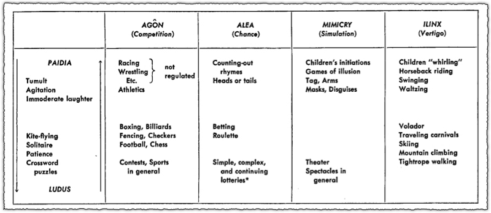

Reading / Media Response
Reading / Media 1
📌 DUE: Week 2 Tuesday, October 7
Reading / Media 1 comes in TWO parts:
- a reading response; and
- a media response.
READING RESPONSE
Read at least one of these short essays about ideation/building ideas by these animators published in Mostly Moving, an independent animation journal:
- Caleb Wood: Looking at Shit: Conception of Ideas
- Jamie Wolfe: Livin' in the Chaos Loop
Working with games and interactivity means thinking a lot about agency—what kind of agency will you give or deny your audience? Above, animators Jamie and Caleb talk about forces of chaos and control in relation to their practices. Take inspiration from Jamie and/or Caleb to formulate at least three statements (number them!) that explore how you feel about chaos and control in relation to your interactive practice.
MEDIA RESPONSE
Spend at least 30 minutes with any TWO (2) of the following projects: LINK TO READING/MEDIA 1 LIST
In what ways do the above interactive projects create meaning when they grant or deny you agency?
Take notes about your experience and reflections, then submit a write-up of your final response.
Reading / Media 2
📌 DUE: Week 3 Tuesday, October 14
Read the following chapters from Gordon Calleja’s book, In-Game: from Immersion to Incorporation.

Then play Way To Go.
(If it's not available to you, check out the sample video and making-of here.)
For your response, prepare only a few sentences to answer each question below. I will call on people in the class at random to share their thoughts.
- According to Calleja, in what ways can game-players become involved with, or embody their avatars?
- What is a Magic Circle? Have you ever experienced this phenomenon?
- In what ways does Calleja think bodily involvement, or movement, augments gameplay?
- Which of Calleja’s ideas apply best to your experience of Way To Go?
Reading / Media 3
📌 DUE: Week 6 Tuesday, November 4
As inspiration, spend some time with any one of the following resources (Manovich, or a project listed in the spreadsheet.) I will call on people in the class at random to share their thoughts.
Option 1: Manovich Reading
Read "On Totalitarian Interactivity" by Lev Manovich, then answer the following questions:
- According to Lev Manovich, what is the motivation for interactivity in "new" media?
- Consider your own political, social, cultural ideology—are you able to pinpoint ways in which they have influenced your attitude toward, or perspective of, interactive media? …Computers in general?
OR
Option 2: Play a project
Play any ONE project in this spreadsheet, then answer the following questions:
Question 1.
Roger Caillois introduces in his book "Man, Games, and Play" the fundamental categories of play--agon (competition games); alea (chance games); mimicry (simulation or role-play); and ilinx (vertigo or sense-altering experiences)

Can you fit the project you've played above into one or more of these categories? Or would you create your own category to describe this project--and if so, how would you describe this category?
Question 2.
Analyse your experience of embodiment (or disembodiment) in your selected project -- What role did you play in this reality, and how did that shape your interpretation of this project's intention?
Justify your claim with at least 2 points of formal analysis (e.g. controls for interaction, perspective, aesthetics, timing, etc.)